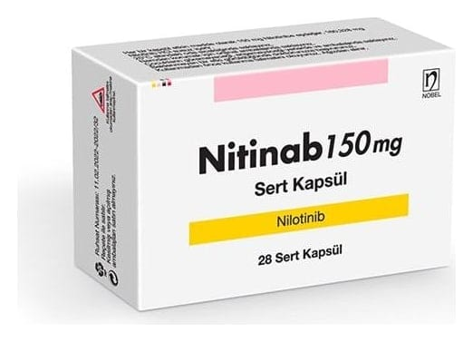

Nitinab 150 mg Sert Kapsül, 28 Adet

Ne için kullanılır
KT · Bölüm 1NİTİNAB, nilotinib adı verilen etkin madde içeren bir ilaçtır.
Her kapsül 150 mg nilotinib içerir. Kapsüller içerisinde açık sarı granül içeren, üzerinde 150 yazılı, No: 1 turuncu opak kapak / turuncu opak gövde sert jelatin kapsüllerdir.
NİTİNAB haftalık ve aylık paketler halinde bulunur:
• Haftalık paket 28 sert kapsül içerir. • Aylık paket 112 sert kapsül içerir. Aylık paket, 4 ayrı haftalık paketten oluşur.
NİTİNAB, Philadelphia kromozomu pozitif kronik miyeloid lösemi (Ph-pozitif-KML) olarak adlandırılan kan hücrelerinin kanserinin (lösemi) tedavisinde kullanılır. KML, vücudun çok fazla sayıda anormal beyaz kan hücresi üretmesine yol açan bir kan kanseridir.
NİTİNAB, yeni tanı konmuş erişkin ve çocuk KML hastalarının tedavisinde ve imatinib dahil olmak üzere önceki tedavilerden artık yarar görmeyen KML hastalarında kullanılır. Daha önceki tedaviler ile ciddi yan etkiler yaşayan ve bu ilacı kullanmaya devam edemeyecek erişkin ve çocuk hastalarda da kullanılır.
KML’li hastalarda, DNA’daki (genetik materyal) bir değişiklik, vücutta anormal beyaz kan hücreleri üretilmesini sağlayan bir sinyali tetikler. Nilotinib bu sinyali bloke eder ve böylece bu anormal beyaz kan hücrelerinin üretimini durdurur.
NİTİNAB tedavinizin izlenmesi Tedavi sırasında kan testlerini de içeren düzenli testleriniz yapılacaktır. Bu testler ile NİTİNAB’ın vücudunuz tarafından nasıl tolere edildiğini görmek amacıyla vücudunuzdaki karaciğer ve pankreas fonksiyonu ve kan hücrelerinin (beyaz kan hücreleri, kırmızı kan hücreleri, kan pulcukları) miktarı belirlenecektir. Kan testleriyle vücudunuzdaki elektrolitler de (potasyum, magnezyum) izlenecektir; elektrolitler kalbinizin çalışması açısından önemlidir. Kalp atış hızınız da kalbin elektriksel aktivitesini ölçen bir alet kullanılarak kontrol edilecektir (“EKG” testi). Kan testleriyle kandaki şeker ve yağ düzeyi de izlenecektir.
NİTİNAB tedavisine başlamadan önce başlangıç EKG, başladıktan sonra 7. günde ve klinik olarak gerekli olduğu takdirde daha sonra tekrar EKG çekilmesi uygundur.
Doktorunuz tedavinizi düzenli olarak değerlendirecek ve NİTİNAB almaya devam etmenizin gerekip gerekmediğine karar verecektir. Eğer size NİTİNAB’ı bırakmanız söylenirse, doktorunuz KML tedavinizi izlemeye devam edecektir ve eğer durumunuz gerekli olduğunu gösterirse doktorunuz size NİTİNAB’a tekrar başlamanızı söyleyebilir.
NİTİNAB’ın nasıl etki gösterdiği veya ne için size reçete edildiğine ilişkin ilave sorularınız varsa doktorunuza sorunuz.